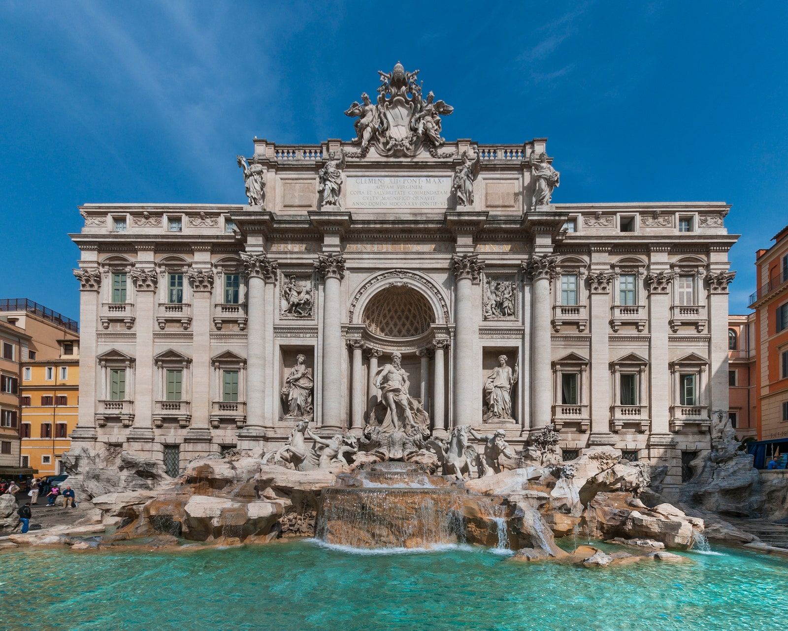

Roman Baroque Architecture

The Baroque architecture is a construction style that emerged in the 16th century, reviving the characteristics of Roman architecture in a modern fashion.
The Baroque structures mirror the wealth and power of the Catholic Church by integrating unique features like broad naves, ornate finishings and unfinished elements.
The Trevi Fountain is a fountain that marks the terminal point of one of the aqueducts of Rome in the Trevi district.
The fountain was finished in 1762 by Giuseppe Pannini with sculptures that recall the Ancient Roman period.
Back